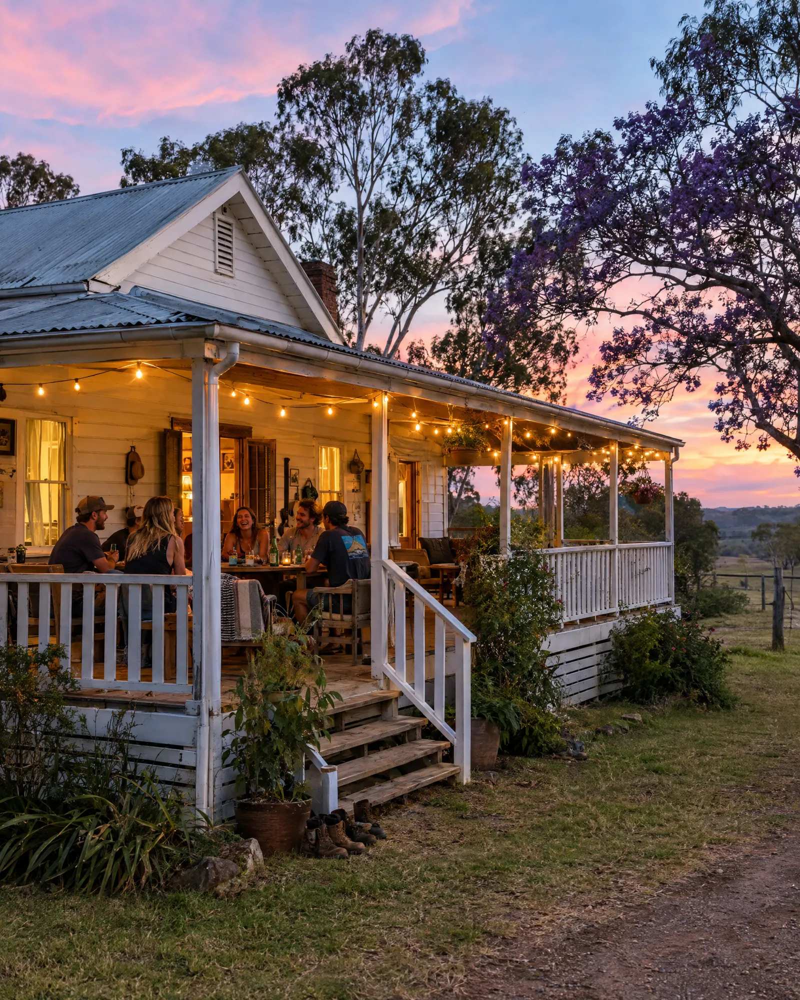
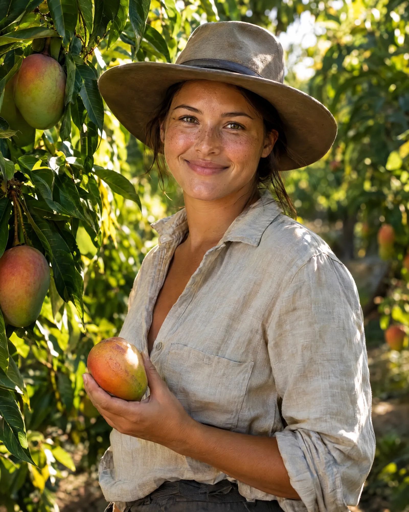

Australie
1 003 villes, du Queensland à la Tasmanie. Filtrez par État en un clic : 617 contacts en QLD, 493 en NSW, 289 en WA…

Paiement unique · Guide envoyé immédiatement par e-mail · Carte, Apple Pay, Google Pay
Le visa, vous l'avez. Le billet aussi. Reste l'essentiel : savoir qui appeler en arrivant. Ce guide rassemble 2 303 employeurs et agences qui embauchent des backpackers, pour que votre première semaine serve à travailler, pas à chercher.

1 003 villes, du Queensland à la Tasmanie. Filtrez par État en un clic : 617 contacts en QLD, 493 en NSW, 289 en WA…
1 970 employeurs directs et 333 agences : fermes, stations, hôtels, roadhouses, usines. 2 078 numéros, 1 540 e-mails.
Le mode de paie est indiqué quand il est connu (au rendement, à l'heure, salaire), avec vos droits : salaire minimum, fiches de paie, super.

Stations, roadhouses et hôtels isolés logent souvent leurs équipes. Le guide vous dit aussi quels « working hostels » éviter.
Les 88 jours pour un 2e visa, les papiers (TFN, RSA, White Card), un modèle d'e-mail en anglais et un CV à l'australienne.
6 lignes réelles sur 2 303, onglet Contacts. Les numéros sont masqués ici ; dans le guide, téléphone, e-mail et site web sont cliquables.
| 1 | Nom | Poste | État | Ville | Saison | Paie | Téléphone |
|---|---|---|---|---|---|---|---|
| 2 | 888 Citrus | Citrus | QLD | Gayndah | Toute l'année | Au rendement | 04•• ••• ••• |
| 3 | Grand Burg Vineyard | Vineyard | SA | Tanunda | Fév → Avr | Au rendement | 04•• ••• ••• |
| 4 | Alexandria Station | Cattle | NT | Camoweal | Toute l'année | Salaire | 04•• ••• ••• |
| 5 | Croc Cafe & Bakery | Shop Assistant | WA | Wyndham | Toute l'année | À l'heure | 04•• ••• ••• |
| 6 | Packsaddle Roadhouse | Roadhouse | NSW | Broken Hill | Toute l'année | À l'heure | 04•• ••• ••• |
| 7 | 3rd Rock Agriculture | Pear and Apples | TAS | Judbury | Nov → Fév | Au rendement | 04•• ••• ••• |
+ 2 297 autres contacts dans le guide
Obtenir le guide · 27 €Un appel, un job, un toit.
Hangar de conditionnement · Queensland
Nombre d'employeurs directs qui recrutent chaque mois, par État, hors postes à l'année. Extrait de l'onglet Calendrier du guide.
| Jan | Fév | Mar | Avr | Mai | Juin | Juil | Août | Sep | Oct | Nov | Déc | |
|---|---|---|---|---|---|---|---|---|---|---|---|---|
| QLD | 39 | 38 | 64 | 77 | 95 | 98 | 95 | 80 | 78 | 91 | 62 | 38 |
| NSW | 9 | 17 | 30 | 25 | 49 | 78 | 71 | 71 | 56 | 48 | 53 | 35 |
| VIC | 39 | 66 | 57 | 47 | 37 | 40 | 29 | 28 | 19 | 17 | 13 | 32 |
| SA | 30 | 41 | 43 | 40 | 5 | 5 | 5 | 6 | 5 | 4 | 13 | 12 |
| WA | 19 | 23 | 24 | 23 | 36 | 23 | 28 | 33 | 35 | 31 | 18 | 21 |
| TAS | 49 | 69 | 71 | 35 | 11 | 9 | 8 | 8 | 8 | 9 | 50 | 48 |
| NT | 2 | 1 | 1 | 3 | 2 | 2 | 2 | 2 | 2 | 2 | 3 | 2 |
Le pic du Queensland tombe en juin, celui de la Tasmanie en mars. Lire le guide des saisons

2 303 fiches à filtrer par État, catégorie, type de paie et mois d'embauche. Téléphone, e-mail et site web, cliquables.
Une carte des embauches mois par mois, par État et par secteur, pour arriver dans une région deux à trois semaines avant le pic.
Les 88 jours, vos droits et les arnaques à éviter, les papiers à préparer, un modèle d'e-mail en anglais et un CV à l'australienne.
Les 19 sites où chercher en complément : Seek, Indeed, Gumtree, Workforce Australia…
Un fichier Excel (.xlsx) avec 2 303 contacts d'employeurs et d'agences qui embauchent des backpackers en Australie, un calendrier des embauches par État et par mois, 19 sites d'emploi et un guide PVT : 88 jours, droits, papiers, modèle d'e-mail en anglais et CV.
Oui. Le fichier s'ouvre avec Excel, Google Sheets ou Numbers, y compris sur téléphone avec leurs applications gratuites. Pour filtrer par État, catégorie ou mois, un ordinateur reste plus confortable.
Paiement unique sur la page sécurisée Payhip, par carte bancaire, Apple Pay ou Google Pay selon votre appareil. Le lien de téléchargement s'affiche dès le paiement et vous est aussi envoyé par e-mail.
Ils proviennent de sources publiques et environ 90 % ont un numéro de téléphone. Les besoins de recrutement changent d'une saison à l'autre et certaines coordonnées ont pu évoluer : appelez toujours avant de vous déplacer.
Personne ne peut honnêtement garantir un job : le guide vous fait gagner le temps de la recherche. Le droit de rétractation ne s'applique plus une fois le fichier téléchargé, mais s'il est illisible ou incomplet, écrivez-nous : nous le remplaçons ou vous remboursons.
Fichier Excel · 2 303 contacts · calendrier des embauches · guide PVT
Les besoins changent d'une saison à l'autre : appelez toujours avant de vous déplacer.
Prix TTC, paiement unique. Guide envoyé par e-mail et téléchargeable juste après le paiement.